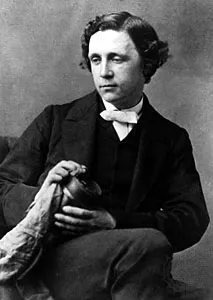

J. K. Rowling

Es una escritora británica conocida por ser la autora de la saga de libros de Harry Potter, el famoso niño aprendiz de mago, de los que se han vendido más de 400 millones de ejemplares. Trabajó en Oporto (Portugal) como profesora de inglés. Más tarde se trasladó con su hija a Edimburgo (Escocia), donde vivía de las prestaciones del estado porque se encontraba sin empleo: fue entonces cuando comenzó la escritura de la primera entrega de Harry Potter, que concluyó en 1995. El título que escogió para este libro fue "Harry Potter y la piedra filosofal". J. K. Rowling encontró pronto representante pero tardó mucho en conseguir que fuera publicado: el libro fue rechazado por doce editoriales hasta que cayó en manos de Bloomsbury, una pequeña editorial londinense que aceptó a publicarlo, aunque con pocas esperanzas de conseguir con ello una gran inversión. Al éxito del primero le siguieron seis entregas más: "Harry Potter y la cámara secreta", "Harry Potter y el prisionero de Azkaban", "Harry Potter y el cáliz de fuego", "Harry Potter y la Orden del Fénix", "Harry Potter y el misterio del príncipe" y "Harry Potter y las Reliquias de la Muerte", séptimo y último libro que concluye la serie. J. K. Rowling recibió multitud de premios por su obra: el Premio del Libro Británico en la categoría Libro Infantil del Año, el Premio al Mejor Libro Infantil (que recibió en varias ocasiones) y fue nombrada escritora del año en los Premios Británicos de 2000, además de recibir otros títulos. Su obra ha significado un éxito sin precedentes en el ámbito de la literatura infantil, batiendo todos los records de ventas en su campo. También se han rodado varias películas basadas en los libros.
Comentarios
George R. R. Martin
Escritor y guionista americano, George R. R. Martin, de nombre real George Raymond Richard Martin, es conocido por sus novelas y relatos de terror, fantasía, histórica o ciencia ficción. Alcanzó su fama gracias a ser el autor de la conocida serie de fantasía medieval, Canción de Hielo y Fuego, adaptada a la televisión bajo el título Juego de Tronos. Martin creció en una familia obrera siendo el mayor de tres hermanos, desde pequeño se vio cautivado por el mundo de las palabras, leyendo y escribiendo relatos. Estudió Periodismo en la Universidad de Evanston, aunque no ejercería mucho tiempo esta profesión, prefiriendo la docencia en el Instituto Clarke de Dubuque y siendo juez de torneos de ajedrez, mientras preparaba sus primeros trabajos literarios. Martin se dio a conocer gracias a sus relatos, con los cuales ganó premios tan importantes como el Hugo o el Nébula, dando el salto a la primera plana de la ciencia ficción gracias a su primera novela, Muerte de la luz, obra que le permitió dedicarse en exclusiva a la escritura. Además de su labor literaria, Martin trabajó como guionista para la televisión en series como La zona crepuscular o La bella y la bestia a mediados de los años 80. A mediados de los 90 abandonaría esta actividad, superando su bache literario, para centrarse en la que es su obra más conocida, la serie de Canción de Hielo y Fuego. Juego de tronos apareció en 1996 y supuso el comienzo de un gran éxito que se vería refrendado con la adaptación de la serie a la televisión por parte de la HBO y que ha sido un fenómeno mediático en prácticamente todo el mundo. A lo largo de su carrera, Martin ha recibido numerosos premios y galardones como el Locus, el Ignotus, el Geffen o el Skylark, entre otros muchos.
Comentarios
Antoine de Saint-Exupéry

Antoine de Saint-Exupéry fue un escritor y aviador francés nacido el 29 de junio de 1900 en Lyon, Francia, y fallecido el 31 de julio de 1944. Es principalmente conocido por su obra más famosa, "El Principito" (Le Petit Prince), una novela corta que ha sido traducida a numerosos idiomas y es considerada una de las obras literarias más importantes del siglo XX. Saint-Exupéry desarrolló una gran pasión por la aviación desde joven y se convirtió en piloto. Durante la Segunda Guerra Mundial, se unió a la Fuerza Aérea Francesa y participó en misiones de reconocimiento. Su experiencia en la aviación influyó en gran medida en su escritura y en su capacidad para expresar la soledad y la búsqueda de significado en "El Principito". Tristemente, Antoine de Saint-Exupéry desapareció en una misión de reconocimiento en 1944 y nunca regresó. Su legado literario perdura a través de sus obras, que siguen siendo leídas y admiradas en todo el mundo. "El Principito" es una obra atemporal que aborda temas como la amistad, la humanidad y la importancia de ver el mundo a través de los ojos de un niño.
Comentarios
Lewis Carroll
Lewis Carroll, cuyo verdadero nombre era Charles Lutwidge Dodgson, fue un escritor, matemático y fotógrafo británico del siglo XIX. Nació en una familia numerosa y creció en Daresbury, Inglaterra. Mostró un gran interés por las matemáticas desde temprana edad y asistió a la Christ Church, Universidad de Oxford, donde se destacó en esta disciplina. Posteriormente, se convirtió en tutor y profesor asistente en Oxford. Aunque Carroll era conocido por su trabajo en matemáticas y lógica, alcanzó la fama literaria gracias a su obra más conocida, "Alicia en el País de las Maravillas", publicada en 1865. Esta historia, inspirada por un paseo en barca con las hermanas Liddell (especialmente Alice Liddell), se convirtió en un clásico de la literatura infantil y una obra de culto en la literatura fantástica. La historia fue seguida por una secuela, "A través del espejo y lo que Alicia encontró allí", publicada en 1871. Además de su trabajo literario, Carroll también era un apasionado fotógrafo y tomó numerosas fotografías de retratos y paisajes. Sus retratos de niños, incluyendo a Alice Liddell, son especialmente conocidos. Lewis Carroll falleció el 14 de enero de 1898 en Guildford, Surrey, Inglaterra. Su legado literario perdura a través de las aventuras de Alicia y su influencia en la literatura y la cultura popular. Sus obras han sido traducidas a numerosos idiomas y continúan siendo leídas y admiradas por personas de todas las edades en todo el mundo. La imaginación creativa de Carroll y su habilidad para crear mundos fantásticos han dejado una marca indeleble en la literatura infantil y la literatura en general.
Comentarios
John Boyne
John Boyne nació en Dublín, Irlanda, y desde temprana edad mostró un gran interés por la escritura y la literatura. Estudió en la Universidad de Dublín, donde se graduó en inglés y literatura. Su carrera como escritor despegó con su novela debut, "The Thief of Time", publicada en 2000. Sin embargo, fue su novela "The Boy in the Striped Pyjamas" (El niño con el pijama de rayas), publicada en 2006, la que lo catapultó a la fama internacional. Esta novela, ambientada durante el Holocausto, cuenta la historia de la amistad entre un niño alemán y un prisionero judío en un campo de concentración. La novela fue un gran éxito y se adaptó posteriormente a una exitosa película. La obra de John Boyne abarca una amplia variedad de géneros y temas, y ha escrito novelas tanto para adultos como para jóvenes. Sus obras exploran cuestiones sociales, políticas y morales, y a menudo tratan temas delicados de manera conmovedora y reflexiva. A lo largo de su carrera, John Boyne ha recibido numerosos premios y reconocimientos por su trabajo literario. Sus novelas han sido traducidas a varios idiomas y han vendido millones de copias en todo el mundo. Además de "The Boy in the Striped Pyjamas", algunas de sus otras obras conocidas incluyen "A Ladder to the Sky", "The Heart's Invisible Furies" y "The Absolutist". John Boyne continúa siendo un autor prolífico y respetado en el mundo de la literatura contemporánea, y su obra sigue siendo leída y apreciada por lectores de todas las edades en todo el mundo.
Comentarios
Stephen King
Stephen King es un escritor estadounidense nacido el 21 de septiembre de 1947 en Portland, Maine. Es conocido como el "Maestro del Horror" debido a su prolífica carrera en la escritura de novelas de terror, ciencia ficción y suspense. Creció en Maine y mostró interés por la escritura desde joven. Estudió en la Universidad de Maine y publicó su primera novela, "Carrie", en 1974, que fue un gran éxito. A lo largo de su carrera, ha escrito numerosas novelas populares como "El resplandor", "It" y "Misery", muchas de las cuales han sido adaptadas al cine y la televisión. En 1999, sufrió un grave accidente automovilístico que influyó en su obra y lo llevó a escribir la serie "La Torre Oscura". Ha recibido varios premios literarios a lo largo de su carrera y ha dejado una huella indeleble en la literatura de terror contemporánea. Está casado con Tabitha King y tiene tres hijos: Naomi, Joe y Owen.